Welcome in Stazione "Stile Heidi"
Ti veniamo a prendere direttamente al binario con il nostro cestino di vimini colmo di speck, formaggi di malga e pane di segale croccante.
Parliamo la TUA linguaValdaora di Mezzo · Val Pusteria
Il "Maso del Divertimento e della Buona Sorte", situato nel cuore di Valdaora di Mezzo.
Qui si parla italiano, tedesco, milanese, romano e tutto quello che sta nel mezzo.
L'Accoglienza che Sognavi (o Quasi)
Benvenuti a GaudiHof, il "Maso del Divertimento e della Buona Sorte", situato nel cuore di Valdaora di Mezzo.
Ti veniamo a prendere direttamente al binario con il nostro cestino di vimini colmo di speck, formaggi di malga e pane di segale croccante. Parliamo la TUA lingua: niente tedesco o italiano formale!
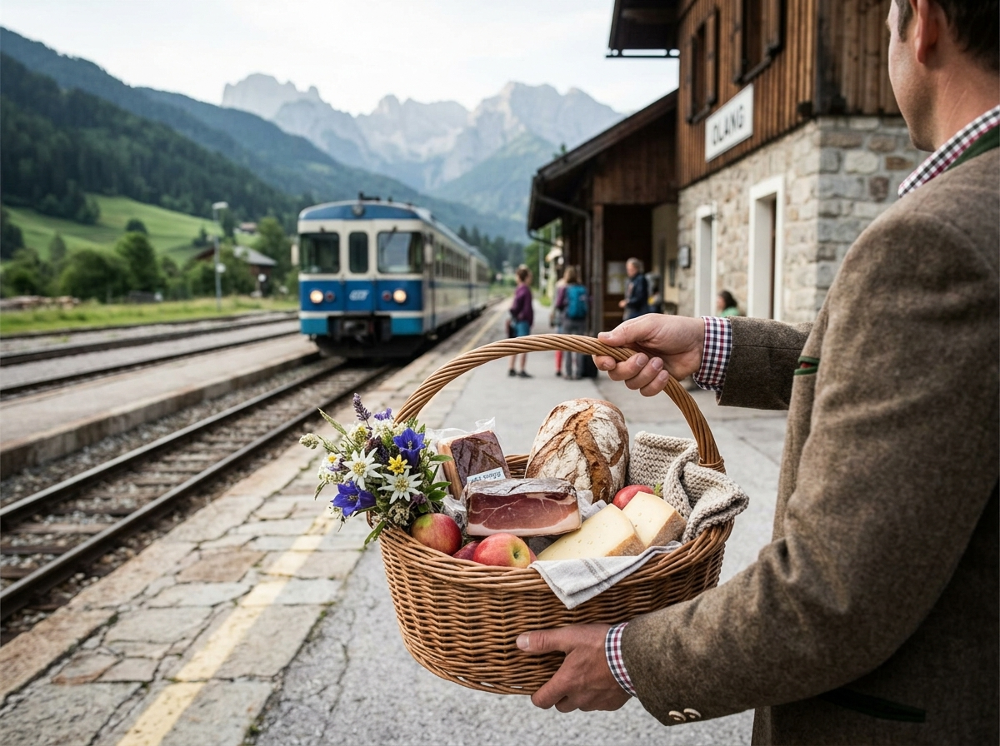
Servizi Esclusivi & Unici
Dal prelievo in stazione alle indicazioni turistiche creative: scopri tutto quello che rende GaudiHof davvero unico.
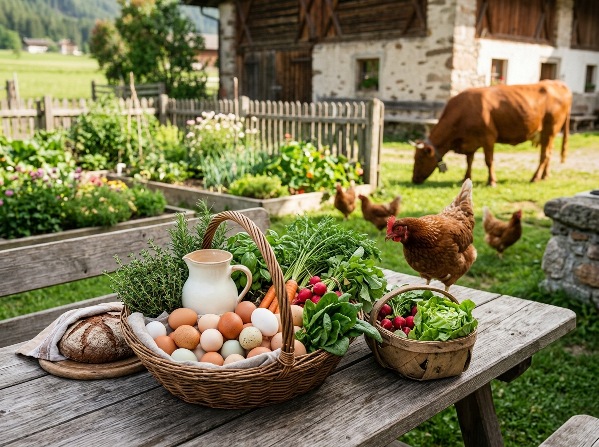
Ti veniamo a prendere direttamente al binario con il nostro cestino di vimini colmo di speck, formaggi di malga e pane di segale croccante.
Parliamo la TUA linguaIl nostro prete residente è sempre a disposizione. Celebrazioni, benedizioni e funzioni al nostro altare all'aperto con vista mozzafiato sulle Dolomiti.
Con vista mozzafiatoScarica la nostra app ChickenMatch: ogni mattina sfoglia i profili delle nostre galline e scegli da chi prelevare l'uovo fresco! Stessa cosa per il latte: match con la mucca che ti sta più simpatica.
Match con la naturaSei già stato da noi? Per ogni soggiorno successivo riceverai una foto del giorno esclusiva: piedi umani o zampe animali con gli sfondi più iconici delle Dolomiti.
Per ospiti già affezionatiColtiviamo ortaggi classici, erbe aromatiche e una selezione di piante di dubbia legalità per veri intenditori della natura.
Per veri intenditori della naturaDolci tradizionali generosamente sfumati con grappe e liquori locali. Disponibile e consigliato anche per i più piccoli!
La colazione più originale della valleLa connessione o il PC ti danno problemi in alta quota? Il nostro tecnico è sempre sveglio per guidarti nel riavvio del router.
Anche in alta quotaChiedici pure come raggiungere le Tre Cime di Lavaredo o il Lago di Braies: ti daremo indicazioni quasi sempre sbagliate per farteli scoprire attraverso deviazioni indimenticabili!
Deviazioni indimenticabiliSe vuoi iniziare la giornata presto, il nostro gallo ti offrirà una sveglia naturale e puntuale. Nessun pulsante snooze, ma puoi sempre provare a negoziare con lui.
Puntuale, a modo suo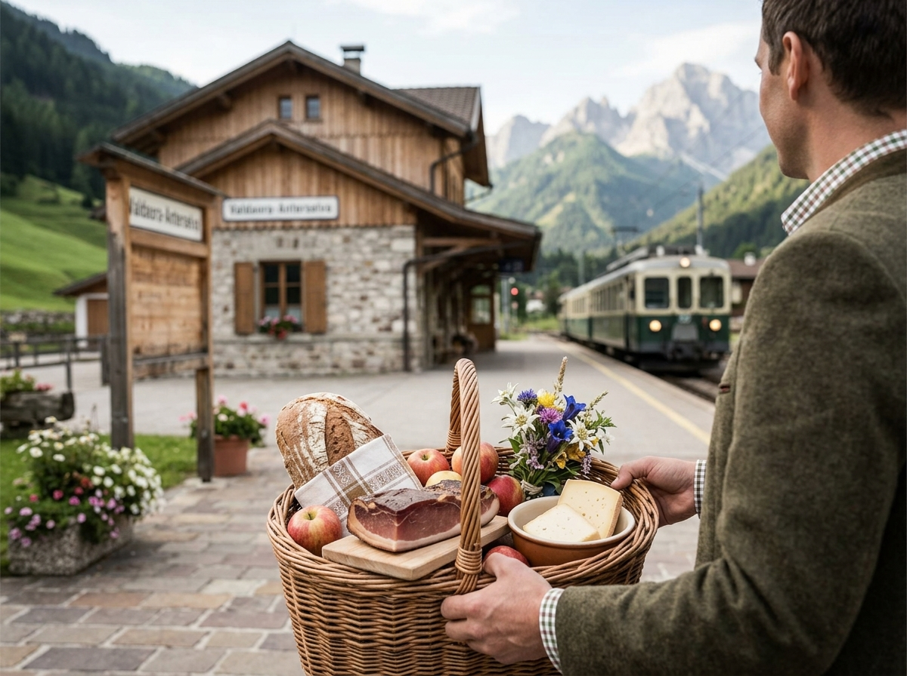
Il viaggio comincia ufficialmente quando scendi dal treno e qualcuno ti accoglie con un cestino di vimini grande abbastanza da contenere la merenda, il pranzo e forse anche le tue aspettative.
Dentro trovi speck, formaggi di malga, pane di segale croccante e la certezza che, almeno per i primi dieci minuti, nessuno ti chiederà di trascinare il trolley su una salita.
La coincidenza più gustosa della Val Pusteria.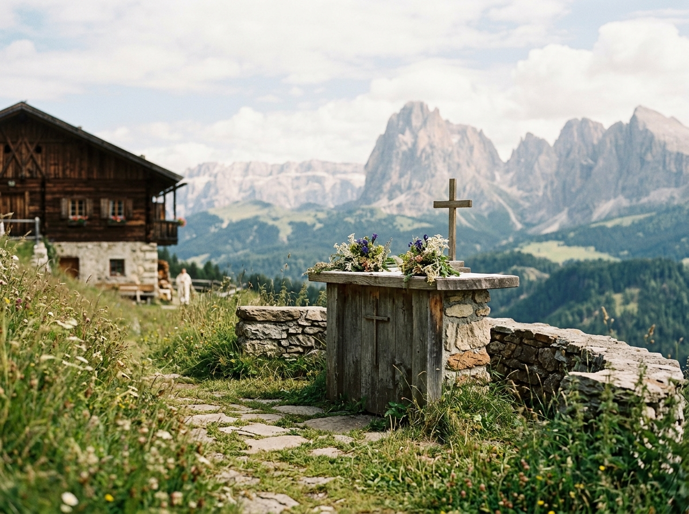
Per chi desidera una celebrazione, una benedizione o semplicemente un momento di raccoglimento con vista sulle Dolomiti, GaudiHof propone un servizio in loco a pagamento.
L'altare all'aperto è pronto, il panorama pure. Per la parte burocratica, liturgica e organizzativa ci affidiamo a professionisti abilitati: anche la buona sorte ama avere i documenti in ordine.
Prenotazione necessaria. Miracoli non garantiti.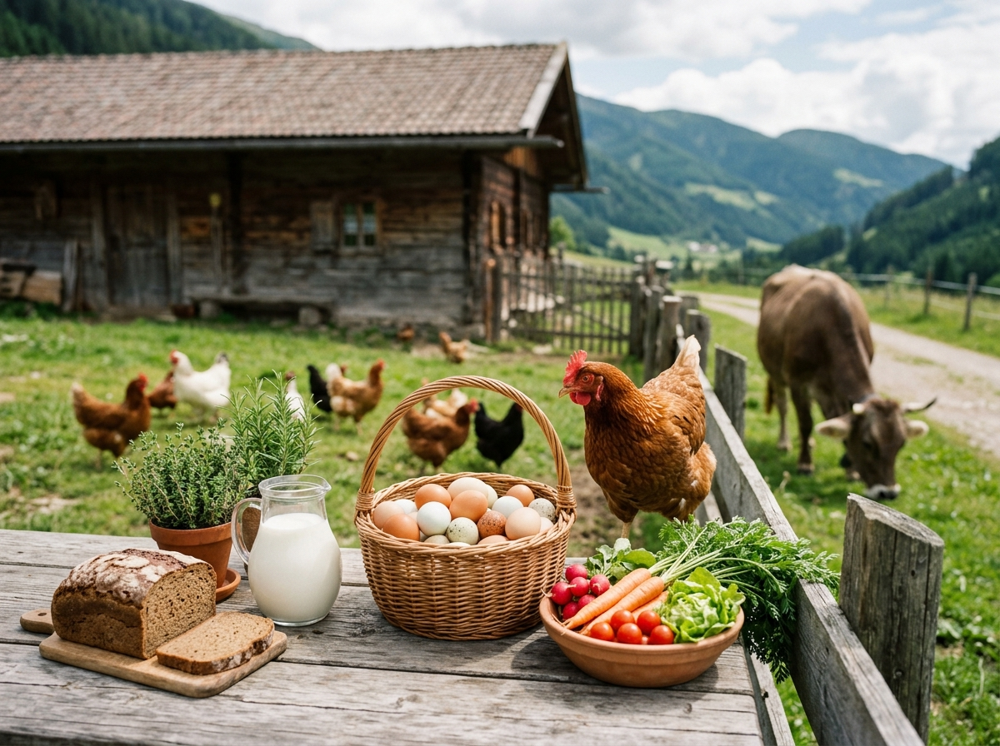
Ogni mattina puoi consultare i profili delle nostre galline, valutare la personalità, il piumaggio e l'attitudine alla produzione di uova. Swipe a destra e la colazione prende una piega sorprendentemente agricola.
Per il latte funziona allo stesso modo, anche se le mucche tendono a rispondere ai messaggi con un'occhiata perplessa. Il prodotto è fresco, il match è discutibile, la fattoria è autentica.
Nessun abbonamento premium. Solo fieno.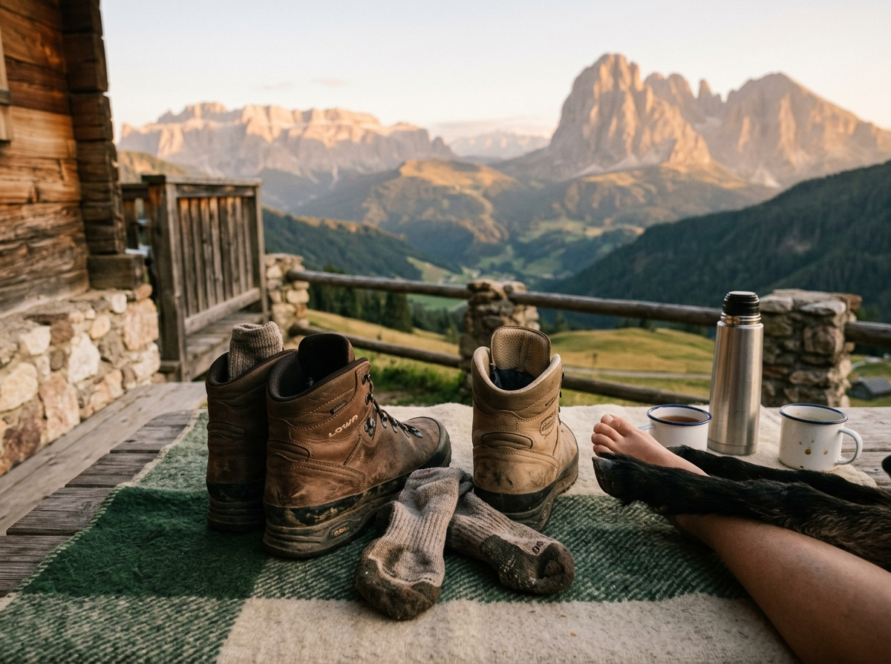
Se torni a GaudiHof, entri automaticamente nel club più esclusivo della valle: riceverai una foto del giorno con piedi umani o zampe animali in posa davanti a uno degli sfondi più iconici delle Dolomiti.
Non accumuli punti, non sblocchi livelli e non ottieni sconti. Ottieni qualcosa di molto più raro: una fotografia che nessuno ti ha chiesto, ma che finirai per mostrare a tutti.
Fedeltà a passo lento, letteralmente.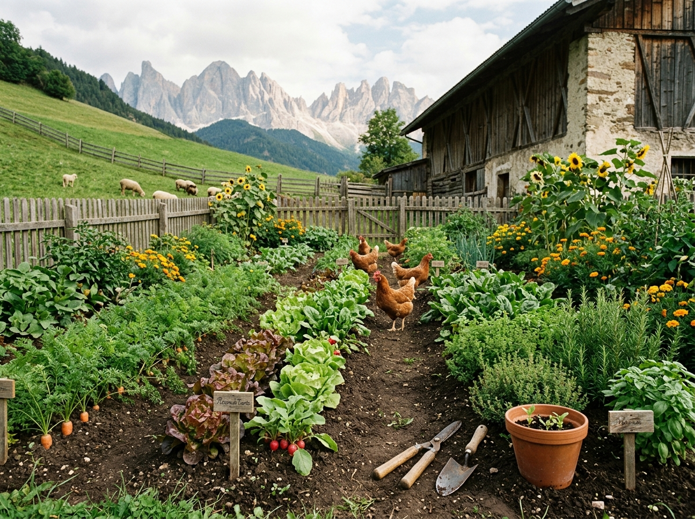
Nel nostro orto coltiviamo ortaggi classici, erbe aromatiche e una selezione di piante talmente misteriose da richiedere una targhetta, una guida e forse un avvocato.
La visita è dedicata a chi ama la natura, sa distinguere una zucchina da una decisione sbagliata e preferisce osservare ciò che non conosce senza portarselo a casa.
Guardare, annusare, non improvvisare.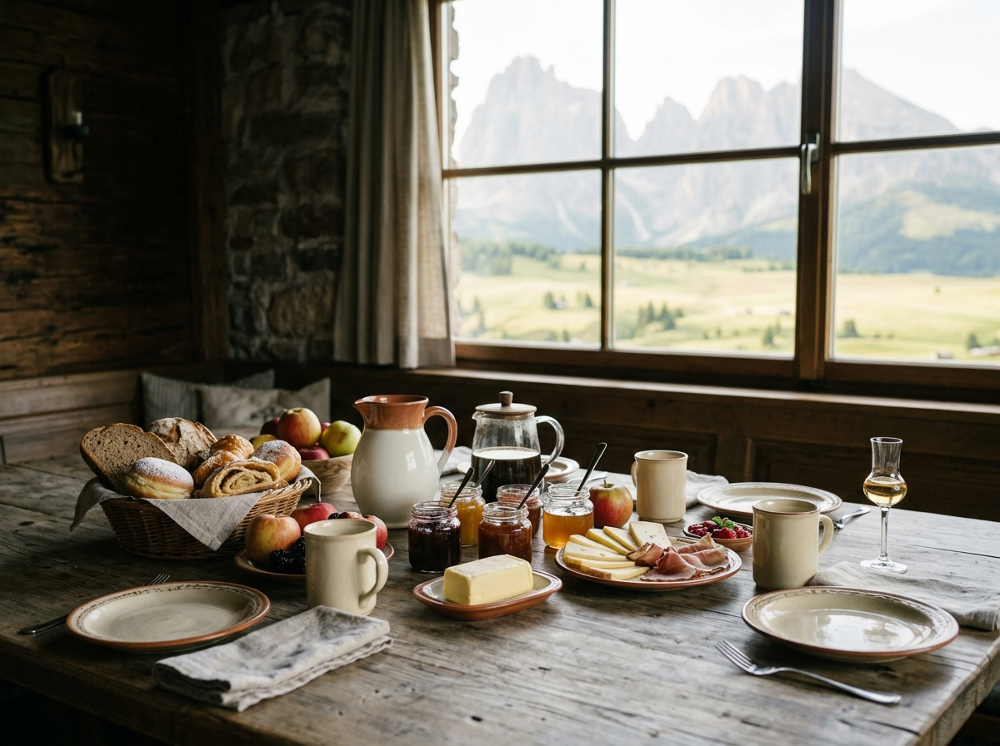
La giornata parte con dolci tradizionali, pane fresco, marmellate e prodotti locali. Alcune ricette possono essere sfumate con grappe e liquori della valle, sempre con moderazione e solo per ospiti adulti.
Per i più piccoli abbiamo latte, succhi e dolci senza alcol: perché anche loro meritano una colazione memorabile, ma non necessariamente una carriera da sommelier prima delle otto.
Energia alpina. Responsabilità inclusa.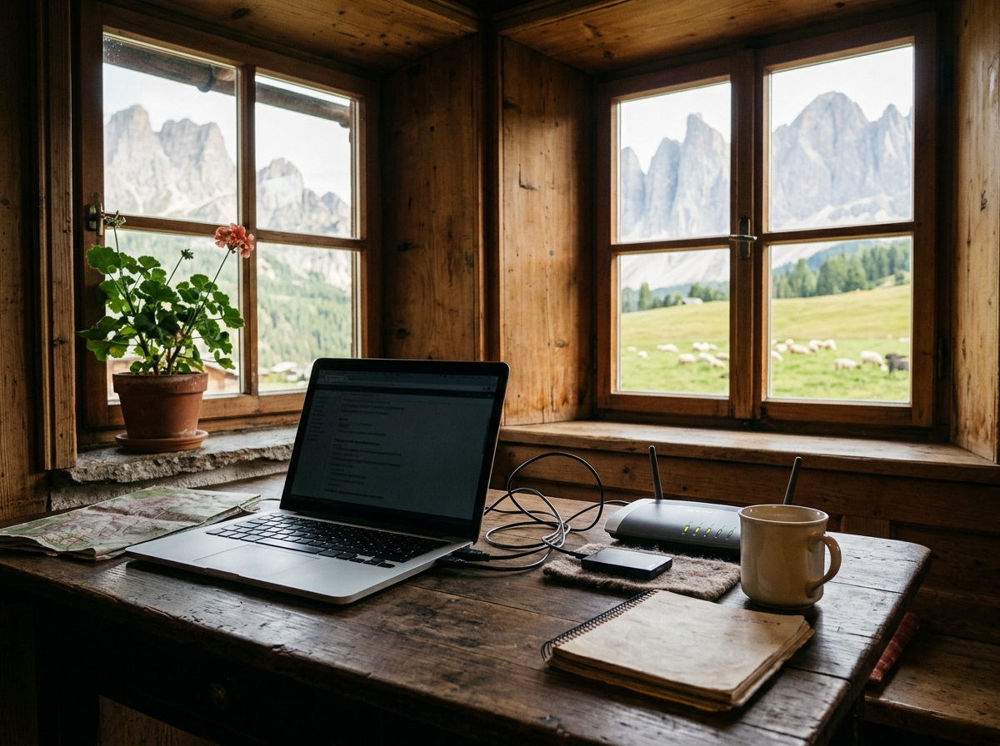
La connessione salta proprio mentre stai inviando la foto del panorama? Il nostro tecnico è pronto a guidarti attraverso la procedura più sofisticata dell'informatica alpina: spegnere e riaccendere il router.
Se il problema persiste, analizzeremo la situazione con grande serietà, poi daremo la colpa alla montagna, al meteo o a quel cavo che nessuno ammette di aver spostato.
Il cloud è sopra di noi. Letteralmente.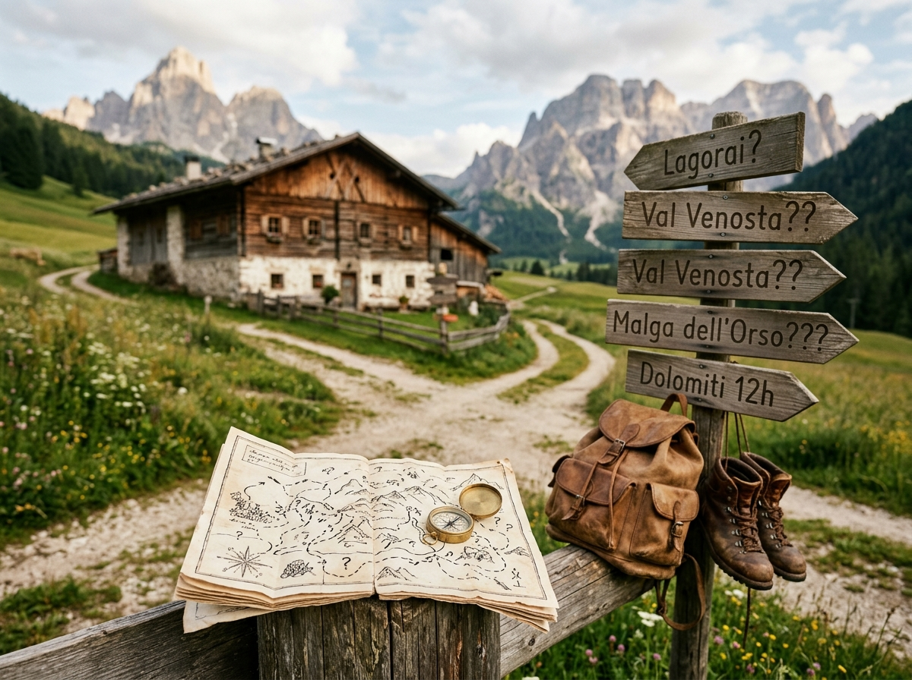
Chiedici come raggiungere le Tre Cime di Lavaredo o il Lago di Braies. Ti forniremo indicazioni dettagliate, appassionate e quasi sempre sbagliate, ma con deviazioni che ricorderai per anni.
Il nostro metodo combina intuizione locale, mappe piegate male e una fiducia incrollabile nel fatto che prima o poi ogni strada porti da qualche parte. Porta scarpe comode e una merenda.
Perdersi è più bello quando lo avevamo previsto.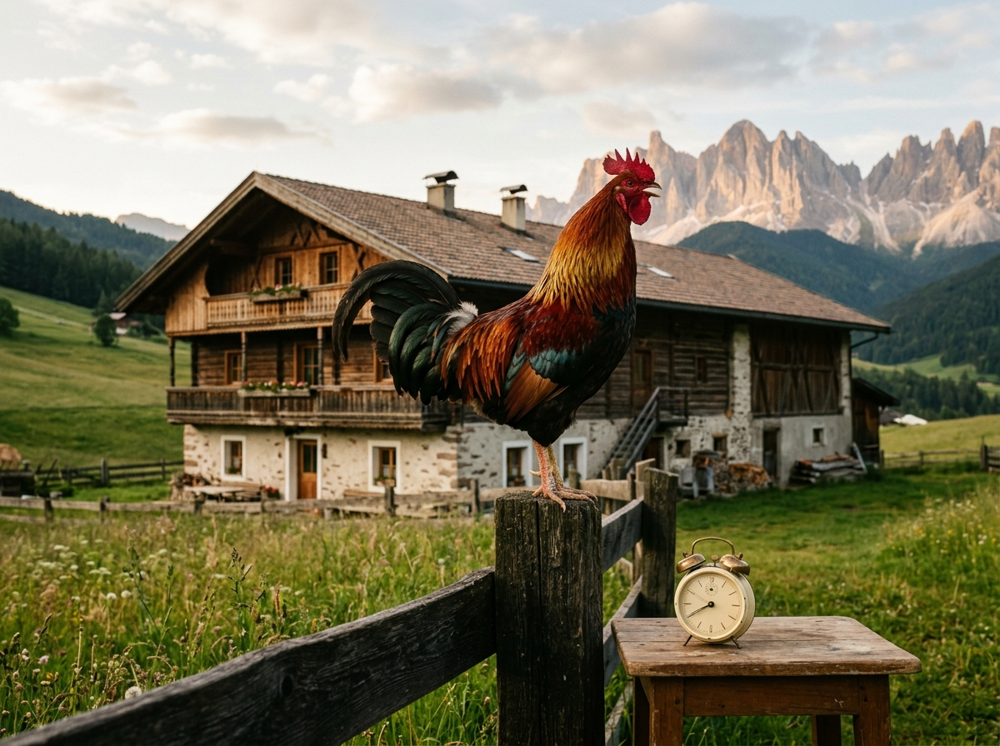
Alle prime luci dell'alba il nostro gallo prende servizio. Non ha un pulsante snooze, non accetta rinvii e non conosce il concetto di “ancora cinque minuti”.
In compenso offre una puntualità impeccabile, una presenza scenica notevole e un repertorio vocale che migliora con la distanza dalla camera da letto.
Puntuale, a modo suo. Soprattutto suo.Il maso che non ti aspetti in Val Pusteria
Il "Maso del Divertimento e della Buona Sorte", situato nel cuore di Valdaora di Mezzo.
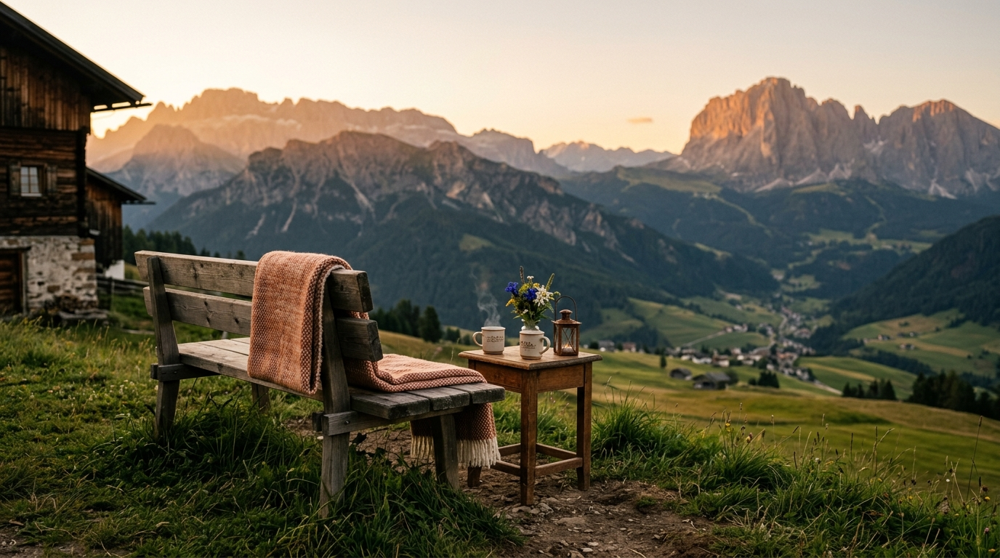
Welcome in Stazione "Stile Heidi" e parliamo la TUA lingua.
Uova & Latte "Tinder Style", VIP Foot-Club per Ospiti Fedeli e Orto Botanico "Senza Confini".
Colazione ad Alto Gradimento, Supporto IT 24/7 e Indicazioni Turistiche "Creative".
Pronto per il tuo prossimo fuori programma?
Scrivici per informazioni, disponibilità e per raccontarci quale gallina vorresti incontrare per prima.
Scrivici una mail